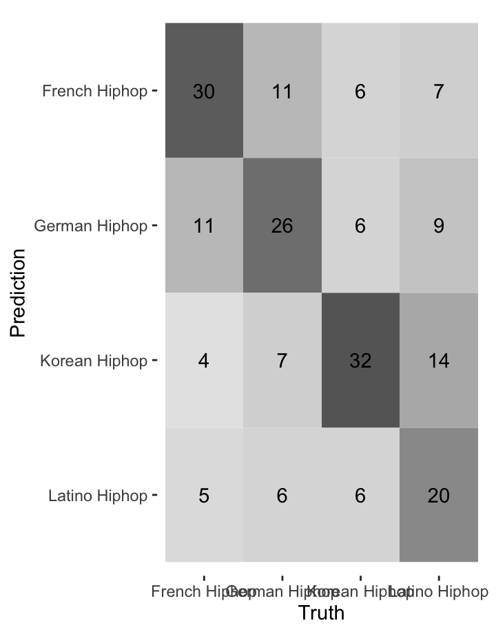
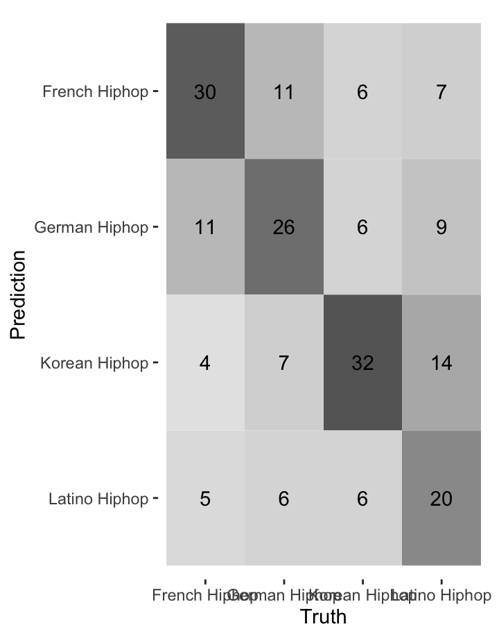
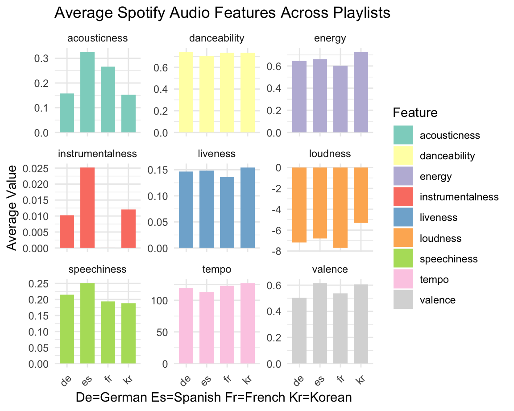
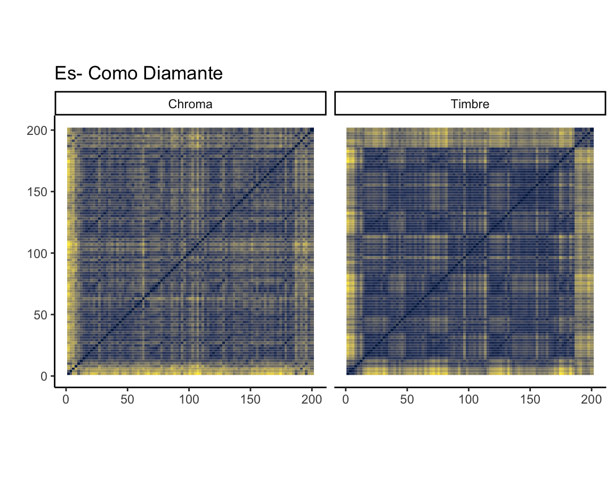
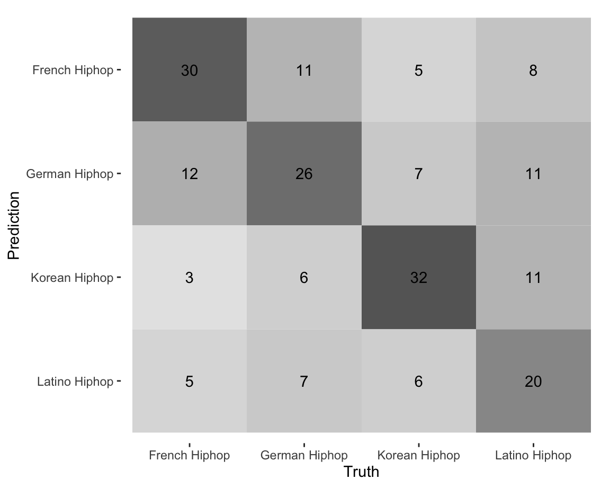
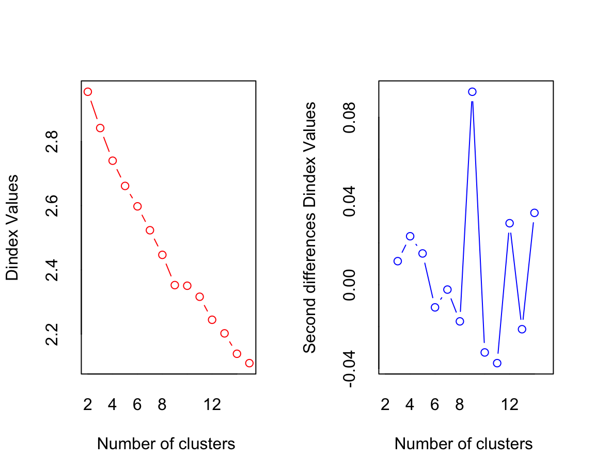

A transcultural,computational musiclogy comparitive study on Hip-pop music
Hip-pop is a global phenomenon, while it has a global influence rooted from the US in the 1970s, different cultures and subcultures, other music genres all give hip-hop a twist of different taste. Hip-hop is deeply intertwined with lyrics, languge, rythms, rythms inherent in the language and societal narratives. Therefore, hip-pop can be studied in this two way street: examining how certain features of hip-hop remain universally popular across the globe, while also exploring how certain feature contribute to its popularity on a local scale.
The corpus of choice are the current popular tracks across 4 different cultures where a relatively larger audience base and hip-pop culture is active, these are French, German, Spanish(latin american), and Korean hip-pop. These playlists contain 50 songs each and 200 in total, chosen from the Spotifys official playlist of hot and trending hiphop songs in each language to make sure the corpus is up to date and is valid for anlaysing trends in mainstream hip-hop scene across different cultures.
Spanish(Latin american) Hip-hop:
German Hip-hop:
Korean Hip-hop:
French Hip-hop:
A transcultural,computational musiclogy comparitive study on Hip-pop music, research question and Assumptions
Here are the research questions that this portfolio tries to analyse:
1.How do the audio features of the popular hip-hop tracks vary across different linguistic and cultural contexts in the current mainstream hip-hop scene?
2.How do audio features influence the popularity of hip-hop tracks across French, German, Spanish (Latin American), and Korean cultures, and what commonalities and differences exist in their influence when these cultures are analyzed separately and collectively as mainstream hiphop?
The research questions invite an analysis of how musical trends and listener preferences in hip-hop might differ by culture, as reflected in the musics audio features (danceability, energy, valence and timbre etc.). It is assumed that certain audio features are universally influential in determining the popularity of hip-hop tracks across different cultures, while other features impact on popularity may vary significantly due to cultural preferences and listening habits. Given the differences and commonalities in the features, certain algorithms can classify, detect, and effectively cluster the songs based on their audio features.
Exploratory data analysis: Trends in the Hip-pop music in different languages/cultures

From the graph we can see that the average value of the audio features of the four hip-hop playlists shows the most variety in instrumentalness, acouscticness, valence, speechiness and loudness. Spanish hip-hop music has the highest average in speechiness, instrumentalness, acousticness and valence, While french music has the lowest average in instrumentalness, speechiness, and energy. German hip-hop music has the lowest average in valence and instrumentalness, while Korean hip-hip music is the highest in energy and valence, but lowest in loudness and acousticness and speechiness.
This exploratory analysis provides great insight into the difference in the popular hip-hop music across these cultures, which could be a result of a variety of factors including historical music influences,linguistic characteristics, trends and the difference in the taste of the listeners(because in reversed thats also why they became so popular). This analysis gives us a good base for our further correlation, regression, single track analysis, and clustering.
Box plot for audio features
The distributions suggest that while some audio features like danceability and energy are consistently emphasized across cultures in hip-hop music, indicating a potential universal preference, other features like acousticness, speechiness, and valence show more variability, which might be influenced by cultural, linguistic preference.
Acousticness: Latino hip-hop shows the highest median acousticness, with a wide interquartile range, suggesting a significant variance in acousticness within these tracks. Koerean hip-hop shows the lowest median in acoustiness.
Danceability: All four playlists have a relatively high danceability, which is expected for hip-hop, for its rhythm and beat that encourages dancing. French hip-hop shows the widest IQR, indicating greater variability in how danceable the tracks in the playlists are
Energy: Korean hip-hop shows a notably higher median energy compared to other playlists, with French Hip-hop displaying the lowest median energy but with a higher variance.All four playlists have a relaticely high energy, which is consistant with hip-hop.
Instrumentalness: Theres a general trend towards lower instrumentalness across all playlists, which reflects hip-hops characteristics where lyrics and vocals are dominant.
Liveness: Liveness appears to be similar across the playlists with relatively low median values, suggesting that most tracks are studio-produced rather than live recordings.
Speechiness: Latino hiphop has the highest median speechiness in all, which could indicate a preference for more wordy and rapping style, and could also stem from the language structure and habit. The other three languages have similar median speechiness, with german slightly higher than the others.
Valence: Valence, which measures the musical positiveness and how happy it sounds, shows that korean hip-hop has the highest median valence, suggesting a trend towards more upbeat, positive music in this category. German Hip-hop has the lowest median valence, possibly indicating a preference for melanchonic or sad vibes.
Anova test: An ANOVA test was preformed on these features across the 4 groups, the result shows that 4 playlists have siginifant difference in energy,valence, speechiness and acousticness, which answers to our question that across these 4 cultures and languages, the playlist in different languages from which a track comes does have difference in its energy, valence, speechiness and acousticness, and no statistically significant difference in liveness, instrumentalness, danceability.
This information is useful for building the classification models and feature selections later on.
Correlation:Audio features, popularity and timbre
This is a comprehensive correlation matrix of spotify audio features, popularity and Spotify timbre coefficient,this graph has a lot of different information but it is aiming to see if there is any interesting and unexpected correlations between them.
A red square indicates a positive correlation, a purple square indicates a negative correlation. The more strong the color is, the more correlated they are.
We can see that danceability has a moderate positive correlation with popularity, it suggests that more danceable tracks tend to be more popular, regardless of linguistic and cultural context. Timbre coefficient like c05, c08, c11, c12, all have a moderate positive correlation with popularity.
There are a few correlations here that are interesting to point out:
Loudness and energy and C01: these three have strong positive correlation, could mean that they are more or less measuring the same thing
Acousticsness/ instrumentalness and C02: C02 has strong negative correlations with acousticness and insrtumentalness, this could mean that C02 is more related to synthetic or electronically produced sounds or vocals.
C06 has a strong negative correlation with c11, which could mean that these coefficients measure some aspects of timbre that are inversely related.
Key profile of each playlist
This bar chart shows a pitch class profile comparison across hip-hop playlists from Germany (DE), France (FR), Spain (ES), and Korea (KR). A pitch class profile illustrates the distribution of musical keys across a collection of songs.
From this chart, we can observe the following about each playlist:
German Hip-Hop (DE): The key of B is the most common, followed by A# and C#, with D# being the least common. French Hip-Hop (FR): The key of C# and B is the most common, like german rap, D# is the least common in french rap. Spanish Hip-Hop (ES): The key of C# is the most common, A seem to be least common. Korean Hip-Hop (KR): A very high count for the key of C# stands out, suggesting a strong preference for this key. D#, A and A# are less common.
The data suggests there might be unique cultural signatures in the harmonic of hiphop music, which could potentially influence popularity.The pitch class profile can reflect cultural preferences for certain keys. For example, the prominence of C# across all four playlists show that there is a preference maybe in the hiphop culture for this specific key. This could be a factor to consider in predicting popularity.
A chi-square test showed that there is no siginificant difference in the preferred pitch classes aross the four playlists.
Spotify Timbre coeficient across playlists
ANOVA test The following coefficients were significant: C01,C03,C04,C05,C06,C07,C08,C09,C12 This means that the variance in these coefficient is significantly different across the 4 playlists. This also indicates that, although they have the same genre as hiphop, the timbre used in the four playlists in different languages varies significantly.
From the violin plot we can see that,for example, although all four playlists have virtually similar distributions for all coefficients. korean hiphop is slighly higher than others in C01 and C01, while german hiphop is the lowest in C02. The coefficients that have significant difference could be useful predictors in distinguishing between the different playlists.
What features make a hiphop song popular? - Stepwise regression model
Because there is a set of potential independent variables in the feature list and timbre coeficients, stepwise regression model can reduce the number of variables to only those that provide the most statistical significance to the model. This stepwise regression model was performed on combining all the playlists together, this helps us choose from all the different feature to find the features that are relevant.
Here are the coefficients that were included in the model: danceability: the tracks with higher danceability are associated with higher popularity. Its statistically significant with a p-value< 0.01. acousticness: more acoustic tracks are, the less popular they are, with p < 0.05.
instrumentalness: has a negative association with popularity, However,with a p-value > 0.05, the impact and variance explained by this feature could be weaker.
mode: Shows a significant negative coefficient, meaning tracks in a minor key (mode = 0) are on average less popular than those in a major key (mode = 1), with p < 0.05.
Spotify mfcc coefficients show that c02, c04, c05, c08, c09, c11 all have significant associations with popularity, with c11, c08, c05 being positive and c02, c04, c09 being negative.
R-squared: 0.2293 suggests that approximately 22.93% of the variability in track.popularity is explained in the model.This means other factors are act play, could be other features that are not captured and this could also be some business and marketing aspects. Most importantly, this is a collection of hip-hop songs from 4 different languages, there could be different factors that contribute to a specific languages track popularity.
The overall F-test is significant (p<0.01), suggesting that this provides a good fit to the data.
What features make songs in each language popular?
p-value < 0.05 (): statistical significance. p-value < 0.01 (): high statistical significance. p-value < 0.001 (): very high statistical significance.
Spanish Hip-Hop: The features valence, speechiness, c05, c09 have predictive power over track popularity. Other features appeared in this graph also have acoosiation but not significant with popularity. In spanish Hip-hop playlist, valence has a positive assoication with popularity and speechiness has a negative association with popularity.
French Hip-Hop: Features like instrumentalness have a negative association with popularity, but its not siginificant, and the whole model is not significant.
German Hip-Hop: In this model, danceability,c01,c02,c03,c06 are significant predictors of popularity. Danceability, C01, C03 has a positive assocation with popularity, while spotify mfcc coeficcient c02, c06 have a negative association with popularity. Energy has a negative coefficient, which is interesting as it typically would be associated positively with popularity in hip-hop music.
Korean Hip-Hop: Only c01, c02 and acoustiness were included in the model, and they are not siginificant.
Across all four cultural contexts, there all have unique features predicting song popularity, whilst some are not statistically significant, we can see that in the selected playlist,valence may have a positive association with popularity in spanish and german hip-hop songs, and instrumentalness may have a negative association with popularity in french and spanish hiphop. Some spotify mfcc coefficients are sigificantly associated with track populartity as well.
In summary, these models support the assumption that some audio features may universally influence popularity across cultures, while the impact of others can vary. The variability in significant predictors across cultures underscores the importance of considering cultural context in predictive modeling of music popularity.
What is the most representative(most average) track of each playlist?
The most representative track in French Hiphop is: Christian Dior
The most representative track in German hiphop2 is: THOT
The most representative track in Korean Hiphop2 is: Ghost
The most representative track in Latino Hiphop is: Cmo Diamante This feature is based on comparing the audio features of each track against the average audio features of all tracks within the same language playlist. It computes the average score of each feature of each playlist and the track whose features are closest to these averages is considered the most representative.
Here is logic behind this feature that retrieves the most representative songs in the playlist:
For each playlist, I calculated the average value for each audio feature across all tracks in that playlist. This gives a profile of what the average track looks like for each playlist of different languages.
For each track in a group, calculate the Euclidean distance between its audio features and the groups average audio features.The track with the smallest Euclidean distance to the average profile is considered the most representative of that group. Its the track whose features are, on average, closest to the mean features of the group.
Once the most representative track is identified, its track_name was extracted.
Then the data was performed a PCA analysis for visualization and clustering, I highlighted the most representative tracks in each playlist, and the clours were grouped by playlists.The most representative tracks are useful for further analysis when we wanna take a close look at a single track and do anlaysis on its chroma and timbre features.
Self-similarity matrices of most-representative tracks in each language
french
German

Spanish

Korean

Although the most representative tracks in each playlist are decided by its audio features and how close they are to the average audio features of the playlist. It would be interesting to look at the self-similarity matrices of these tracks. Self-similarity matrices offer a more nuanced look we can look at recurring patterns, motifs, or structural similarities. From the bigger scope of the structure we can see that all songs have relatively simple structures, all tracks follow a structure similar to ABA.
Random forest

KNN classification

The model correctly predicted 31 French hip-hop tracks. However, it incorrectly predicted 11 tracks as German, 1 as Korean, and 6 as Spanish. There are 27 correct predictions for German hip-hop. The model correctly predicted Korean hip-hop 31 correctly. There are 22 correct predictions for Latino hip-hop.
The model has the best classification results observed for Korean hip-hop and French hip-hop, There seems to be some relatively obvious confusion between French and German hip-hop tracks, which might suggest similar audio features between these two categories or a shared musical influence, and geographically proximate that the model finds difficult to distinguish.The confusion between certain cultures suggests that the distinctions made by the model are based on the similarity of audio features, which may not capture all the nuances of cultural differences. This provides insight to the research question, that some audio features in hip-hop may not be as distinct across cultures, and therefore shared globally. And it might be due to cultural and geographical closeness, because Korean Hip-hop is easier distinguished in both models than the other languages, and possible explanation for the confusion which classifiws Latino hip-hop The results suggest the importance of investigating which audio features most significantly contribute to the models predictive power, which may reveal insights related to the research question about how audio features influence track popularity in different cultures.
Korean hip-hop is consistently identified well by both models, indicated by high precision and recall across the board. French hip-hop has improvement in performance when using KNN as opposed to Random Forest. German hip-hop was predicted better in random forest than KNN , while for Spanish Hip-hop, either model clearly outperforming the other across both metrics for these classes. A precision and recall of 0.62, using korean hiphop as an example, is quite acceptable in this case, considering we are trying to use audio features to predict different languages in the same main genre.This also reflects that there are some differences in these playlists that contribute to a relatively accurate model.
Precision and Recall for Random Forest
# A tibble: 4 3
class precision recall
<fct> <dbl> <dbl>
1 French Hiphop 0.426 0.46
2 German Hiphop 0.537 0.58
3 Korean Hiphop 0.595 0.5
4 Latino Hiphop 0.52 0.52Precision and Recall for KNN
# A tibble: 4 3
class precision recall
<fct> <dbl> <dbl>
1 French Hiphop 0.556 0.6
2 German Hiphop 0.464 0.52
3 Korean Hiphop 0.615 0.64
4 Latino Hiphop 0.526 0.4 K-means clustering for songs in all 4 playlsits: cluster numbers

Due to the large number of data in this dataset, a hierarchical clustering would be very difficult to analyse and visualize. Thus, I used K-means here for its simplicity and efficiency, and easier to visualize the clusters on a PCA plot. To pick the best cluster numbers for the k-means clustering model is to see the elbow point in the second graph, which in this case is 10, so we will have 10 clusters in the next page.
K-means clustering for songs in all 4 playlsits: PCA plot
A multi-lingual rap salad: Generating new playlists based on K-means clustering
What should I do if I want to listen to some hiphops with reggaeton(dembow) beats but not only in spanish? This clustering model might be the way to it.
This is an example of one of the 10 clusters generated by K-means clustering, all the languages are mixed together in this playlist with songs of similar attributes.
Conrtibutions and Limitations
Contributions: The analysis shows that in the trending hip-hop playlists of the four languages and cultures, there is a difference and similarity in the track audio features, which could indicate that certain musical qualities such as danceability, instrumentalness and liveness are generally appreciated in spotifys popular hip-hop music, while others are more culturally specific. Different playlists show similarities and differences in certain spotify timbre coefficients too.
By looking at the correlation matrix of audio features and timbre coefficients, we can get a peak into what each coefficient could be related to what feature, given a opaque nature of these coefficients. So that this could be better used for modelling and clustering.
The regression model on the relationship between popularity and features showed us that certain features are universally associated with hip-hop track popularity in these playlists, such as danceability. But for each playlist and language, there are different factors contributing to track popularity, and for some playlists there is no significant feactures found, which could mean that there are many other factors that are not considered here.
The two classifications algorithms employed in this portfolio, random forest and knn, gave us a comparative analysis and insights for selecting appropriate predictors, and algorithms. Both algorithms have moderately good fittings for our data with evaluations shown in precision and recall, both have their strengths and weaknesses in identifying different playlists. Korean hip-hop is consistently identified well by both models, indicated by high precision and recall across the board.French hip-hop has improvement in performance when using KNN as opposed to Random Forest. German hip-hop was predicted better in random forest than KNN, while for Spanish Hip-hop, either model clearly outperforming the other across both metrics for these classes.This could also mean that, Korean hiphop playlist has songs that are more distinguishable from the rest, while german and french hiphop playlists might share many similarities that confused the algorithms. The relatively successful classification models also tells us that there are some machine recognizable differences in these playlists, although they have same main genre but different languages.
Lastly, this portfolio prompts a new way of appreciating these hiphop music, which is to mix all the languages together and cluster them based on features. The k-means clustering of these tracks generated 10 new playlists, which is a prototype for building a simple recommender system.
Limitations: Spotifys definition of popularity is only based on its algorithms and the populartity within its own platform, thus can not be generalized to the culture and social context. When using average for finding the most representative tracks, averages can oversimplify the complexity of music. A track with average features might not necessarily embody the typical characteristics appreciated by listeners, and this also has the assumptions that the features are normally distributed, which is not true.
The chosen songs for the corpus are from the spotifys official playlists of the current trending songs in this genre, there might be marketing, algorithms and other factors at play, and this tend to reflect a more mainstream taste in this genre. For answering the research question about what features contribute to popularity collectivly and respectively, the findings may be more indicative of what is currently promoted and more accessible to the average listener rather than the qualities that contribute to a songs popularity across the genre as a whole. The findings of this portfolio would be more applicable to understanding popularity within the mainstream, commercially successful music and curated by Spotify currently (important) .There are still many factors and relationships in this whole business and more factors should be examined and taken into account for track popularity in the future. For this study, we gain the very surfaced insight on the current trends in these music on Spotify, and this can not be generalized very well to the genres,the findings should be looked at only within these contexts and lenses.